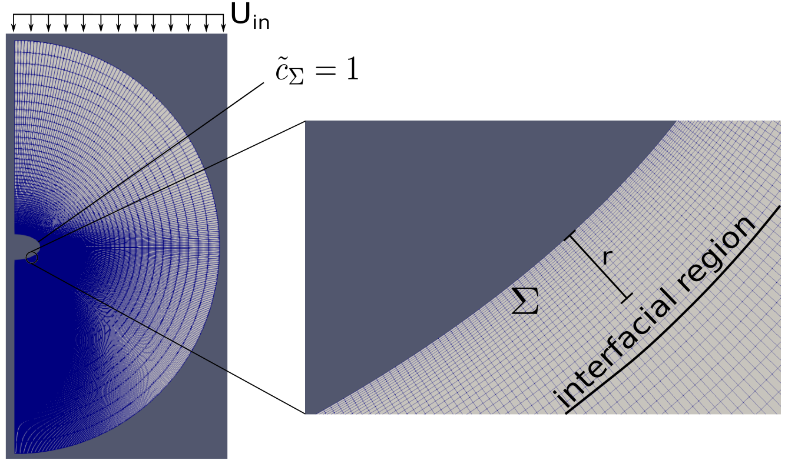
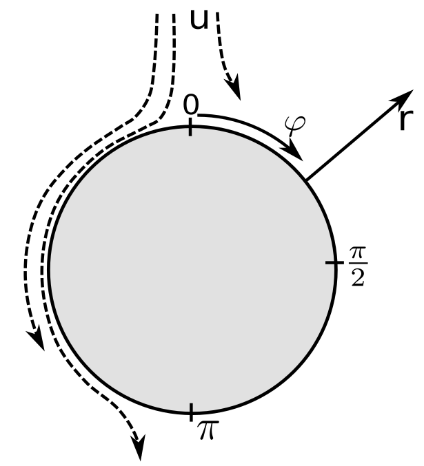
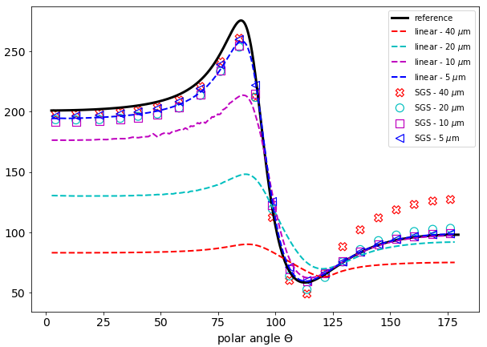
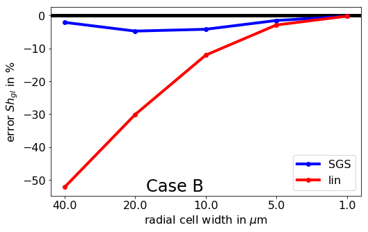
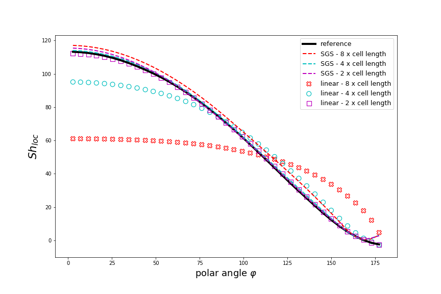

DNS of simplified substitute problem

Example mesh with Dirichlet boundary conditions
Parameter variation for
2D case, rotational symmetry
Constant bubble shape with $\chi \in [1,3]$
Only liquid phase with Re $\in [100,200]$
Specific bulk reaction with Da $\in [0,1]$
Use data from interfacial region at $\Sigma$ to train machine learning model
Results in an explicit expression $f (\bar{c}, r, \text{Da})$
Validation - 2D
Same setup, but different flow parameters:
$\chi=2.5, \; \text{Re} = 175, \; \text{Da} = 0.6$
Overall mass transfer: global Sherwood number
$\text{Sh}_\text{gl} = \frac{1}{|A|} \int_A \text{Sh}_\text{loc} \; \text{dA}
\text{, where } \text{Sh}_\text{loc} = \frac{\left( \partial_r c \right)_\Sigma}{c_\Sigma} d_b$


Local Sherwood number plotted along polar angle

Global Sherwood number - mesh convergence
Validation - 3D
Bubble in low Re-regime ($Re \approx 4$) with physisorption
Hydrodynamics from
Satapathy, Smith(1960). JFM, volume 10, part 4, p.561-570

Local Sherwood number plotted along polar angle
$\text{Re} \approx 4$, $\text{Sc} = 100$
Outside training data parameter range!
Generalization for different flow regimes seem possible
No adjustments needed
Resolution can be reduced by a factor of 10
Outlook
Investigate and extend parameter range
How general is the SGS-ML model?
Include higher reaction rates
Generalization to more complex reaction systems
Can current workflow be used for multiple species?
Use competitive reaction schemes to investigate local selectivity